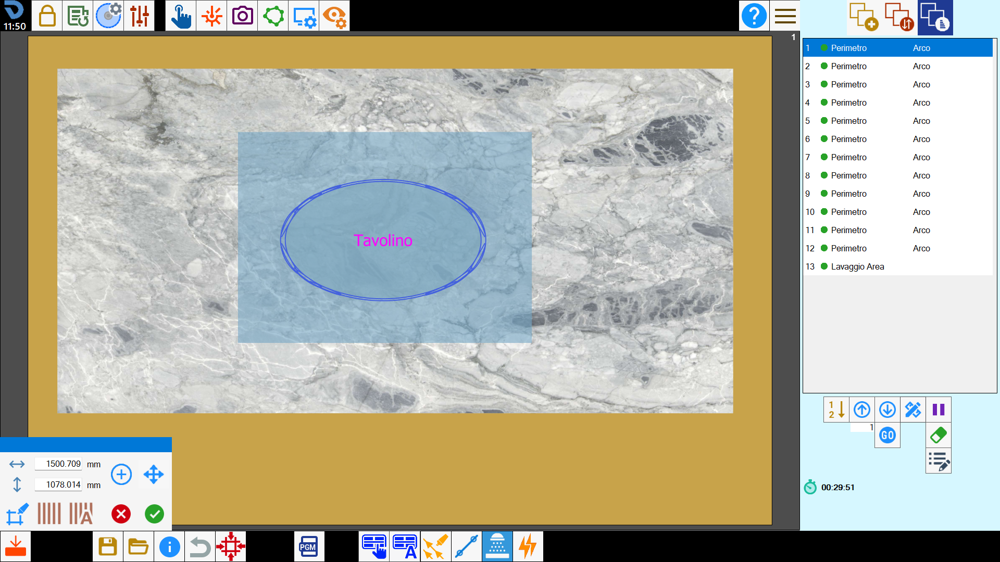
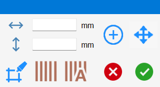
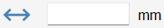
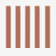
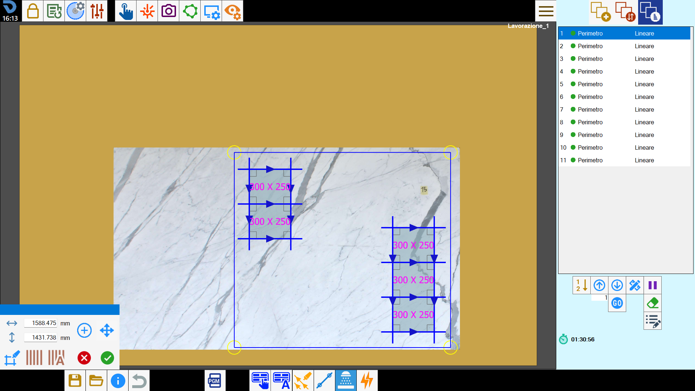

È possibile avviare manualmente un ciclo di lavaggio dell'area, abilitare l’aggiunta automatica dell’intero banco e selezionare una porzione in cui eseguire la pulizia.

Parametri

 | Larghezza |
 | Altezza |
Crea area | |
 | Sposta |
 | Lavaggio pezzo |
 | Pulisci banco |
 | Ciclo di lavaggio automatico |
Modalità di inserimento di un ciclo di lavaggio
L'aggiunta di un ciclo di lavaggio comporta l'inserimento, all'interno dell'area di lavoro, di un rettangolo che indica la porzione del banco soggetta al lavaggio.
È possibile inserire più cicli di lavaggio; le rispettive aree possono anche sovrapporsi, parzialmente o completamente.
Ogni nuovo ciclo di lavaggio verrà inserito al termine dell’elenco dei tagli sul lato destro.
Selezione manuale dell’area
Premendo il pulsante, si abilita la possibilità di aggiungere aree di lavaggio personalizzabili.
È quindi possibile muovere e ridimensionare l’area.

Dopo aver modificato a piacimento l’area per il ciclo di lavaggio, è possibile aggiungere un’ulteriore area da lavare premendo nuovamente il pulsante.

Lavaggio del pezzo
Abilitando questa modalità, l’operatore può selezionare un pezzo. A seguito della selezione, il sistema genera automaticamente un’area rettangolare che racchiude completamente il pezzo selezionato, come illustrato nell’esempio seguente:

Lavaggio completo del banco di lavoro
Impiegando questa modalità, il sistema inserisce automaticamente un taglio denominato “Lavaggio Banco” nella lista dei tagli e ne visualizza la corrispondente rappresentazione nell’area di lavoro.